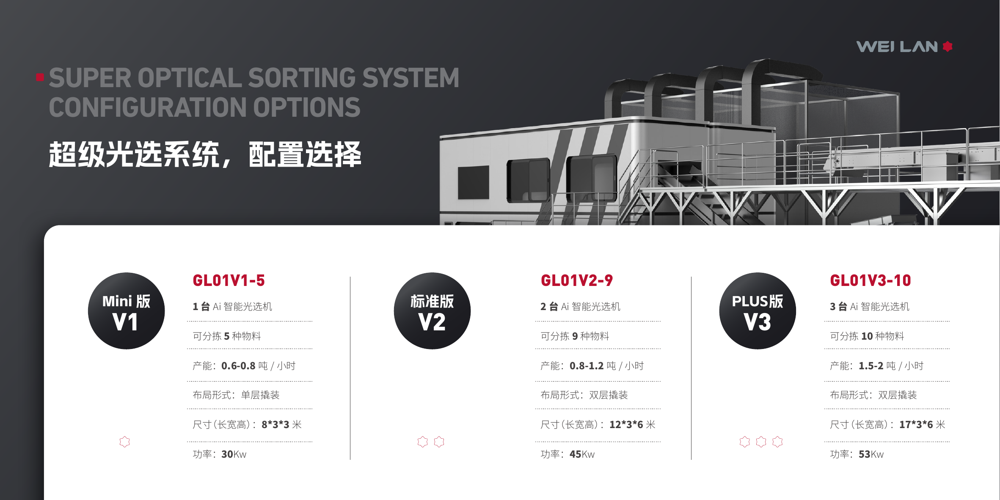

Super Optical Sorting System
AI optical sorting center for recyclable plastics
Modular sorting modules identify and separate PET bottles, HDPE bottles, PP, and mixed plastics by material and color. The system supports cyclic sorting with intelligent bins and a digital control cabin.
- 0.6-2 t/h throughput across V1, V2, and V3 configurations
- 5, 9, or 10 material categories depending on configuration
- Skid-mounted modules reduce installation and maintenance complexity